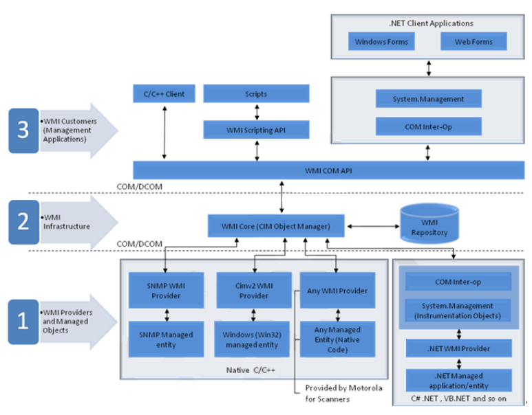

Overview
Windows Management Instrumentation (WMI) is a free component of the Microsoft Windows® operating system that provides a scalable system management infrastructure. Using a free provider plug-in from Zebra, WMI enables local and network remote management of a scanner. System administrators can leverage WMI to query and set information on desktop systems, applications, networks, components, and accessories, such as a scanner. Developers can use the underlying WMI Application Programmers Interfaces (APIs) to create system management applications/tools that organize system information for the purposes of asset management or other enterprise level activities. The WMI API supports the use of several high level languages such as C++, C#, VB, VBScript, and Jscript
For more information, search for WMI on http://msdn.microsoft.com
Zebra Scanner WMI Driver Architecture

Figure 1: Zebra Scanner WMI Driver ArchitectureManaged Objects and Providers
A provider is a COM object that monitors one or more managed objects for WMI. Similar to a driver, a provider supplies WMI with data from a managed object. A provider also handles messages from WMI to the managed object.
A managed object is a logical or physical enterprise component, such as a hard drive, network adapter, database system, operating system, process, or service. A managed object communicates with WMI through a WMI provider that calls methods in the COM API for WMI.
For example, the Platform SDK ships with the Registry provider, which accesses data in the system registry. WMI passes information from the providers to the WMI infrastructure when client applications and scripts request registry data. The Registry provider has one WMI class, StdRegProv, with many methods but no properties. Other providers, such as the Win32 provider, usually have classes with many properties but few methods, such as Win32_Process or Win32_LogicalDisk.
WMI Infrastructure
The WMI infrastructure is a Microsoft Windows operating system component comprised of two components: the Windows Management service, including the WMI Core, and the WMI repository. The Windows Management service acts as an intermediary between the providers, management applications, and the WMI repository. The repository contains only static data about objects, such as the classes defined by providers. WMI obtains most data dynamically from the provider when a client requests it.
Most provider classes, such as Win32_LogicalDisk, are defined in Managed Object Format (MOF) files, are then compiled into the WMI repository by mofcomp.exe. A provider also has a DLL file which contains the code that implements the classes.
WMI Management Applications and Scripts
A management application or script is an application that interacts with the WMI infrastructure. A management application can query or enumerate management data by calling either the COM API for WMI or the Scripting API for WMI. Management applications can call methods in either API to send instructions or reconfigure a managed object. The only data or actions available for a managed object such as a disk drive or a service are those that a provider supplies.
Zebra WMI Provider Plug-in
Zebra's driver provides a WMI interface with a mechanism to view and program scanner settings. It also enables an administrator to perform actions such as firmware updates, event reporting on the progress of a firmware update and the discovery of scanners, as defined in the Symbol Scanner Managed Object Format (MOF) file. By leveraging the WMI infrastructure built into the Windows Operating System, an application developer can write a management application to perform the following enterprise level activities:
- Discovery (asset management)
- Configuration deployment
- In system firmware update
Supported Devices
- Any RSM-ready Zebra scanner
- Supported Scanner Communication Modes
- IBM Hand-held USB
System Requirements
For system requirements, refer to the Scanner SDK for Windows Developer's Guide.
Version History
Please refer Barcode Scanner SDK for Windows release notes for more details.